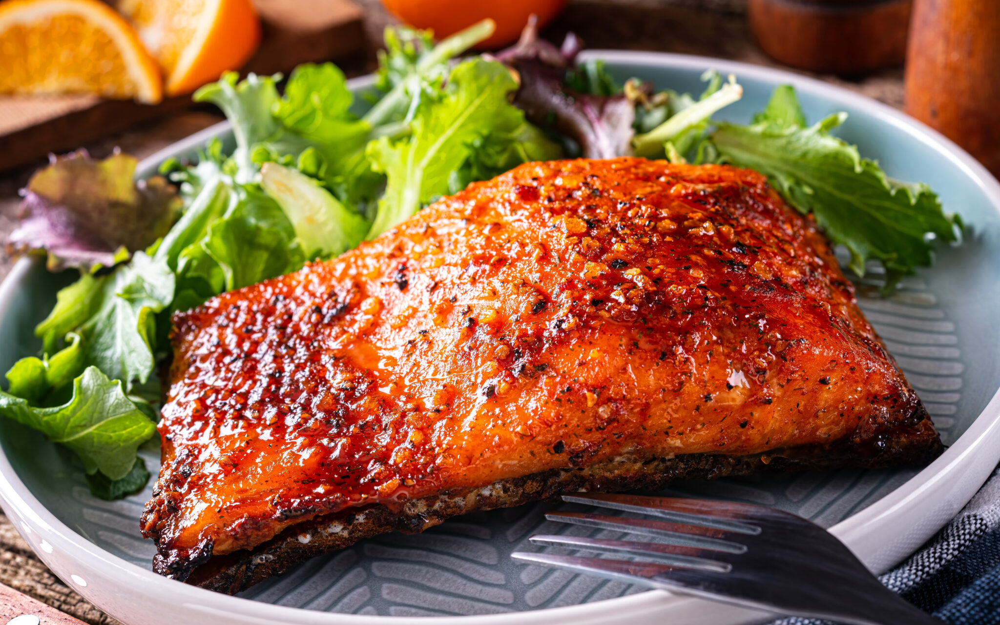

Home
Maple Salmon

Description
A light marinade or glaze is an easy way to liven up an everyday piece of salmon and get your omega- 3s.
This dish is a subtle, Americanized version of a traditional Japanese teriyaki glaze that uses maple syrup
as a sweetener, instead of sugar. With a light citrus and maple flavor, this salmon also makes for a festive
dish at holiday time.
Ingredients
- 1/4 cup low-sodium soy sauce
- 1/4 cup maple syrup
- 4 cloves garlic, smashed and sliced
- 2 tablespoons grated ginger
- 1 tablespoon orange zest
- 1 lb salmon fillet
Steps
- In a small bowl whisk the soy sauce, maple syrup, garlic, ginger, and orange zest together.
- Place the salmon fillet in a re-sealable plastic bag and pour in the soy mixture.
Close the bag and place onto a plate and store in the refrigerator for 30 minutes to 1 hour.
(Do not marinate longer than 24 hours.)
- Preheat your broiler. Remove the salmon from the bag and discard the garlic. Place onto a baking
try and broil for 8 minutes on each side or until cooked through. Serve immediately or at room
temperature.